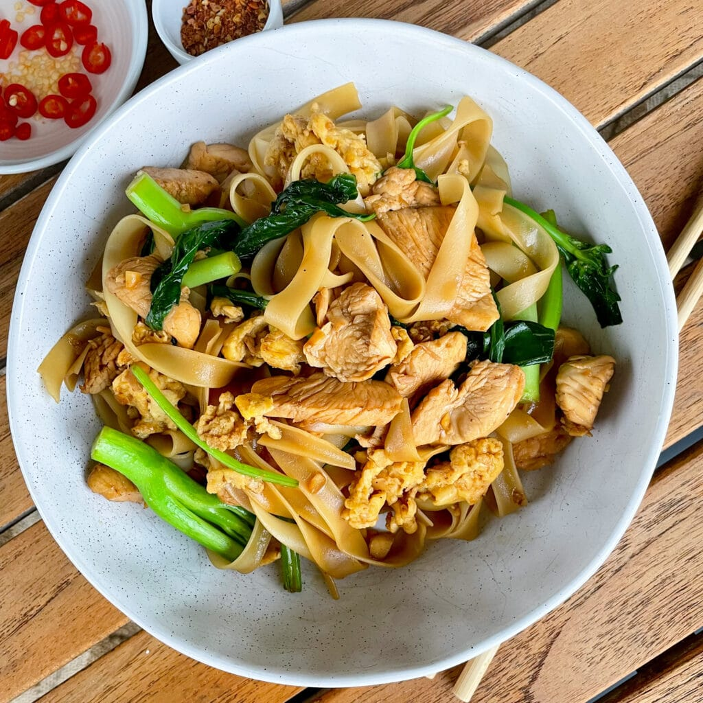

Thaise Cuisine
De Thaise keuken is, in tegenstelling tot wat veel mensen buiten Thailand denken, niet homogeen. De Thaise keuken is dus enorm divers en maakt gebruikt van een grote verscheidenheid aan ingrediënten, kruiden en specerijen. Wat de verschillende regionale keukens van Thailand met elkaar verbindt is dat zij de vijf fundamentele smaaksensaties met elkaar proberen te verenigen in een maaltijd, en soms ook binnen één gerecht: heet (pittig), zuur, zoet, zout en (optioneel) bitter. Ook het gebruik van grote hoeveelheden verse kruiden in gerechten is wat de regionale Thaise keuken verbindt en onderscheidt van vele andere keukens.
Recepten

Pad Thai

Voorbeeld

Voorbeeld

Voorbeeld